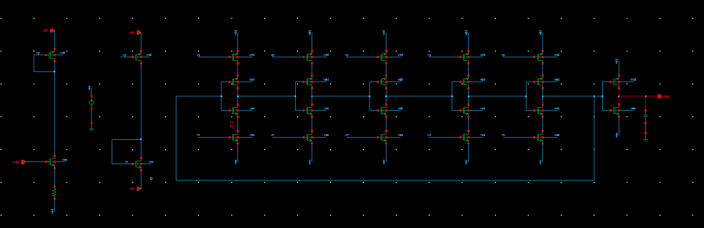
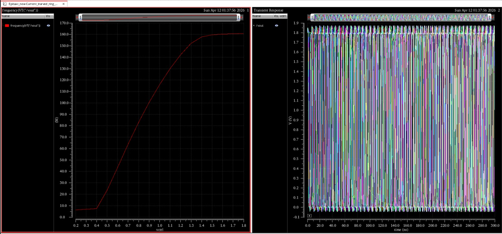
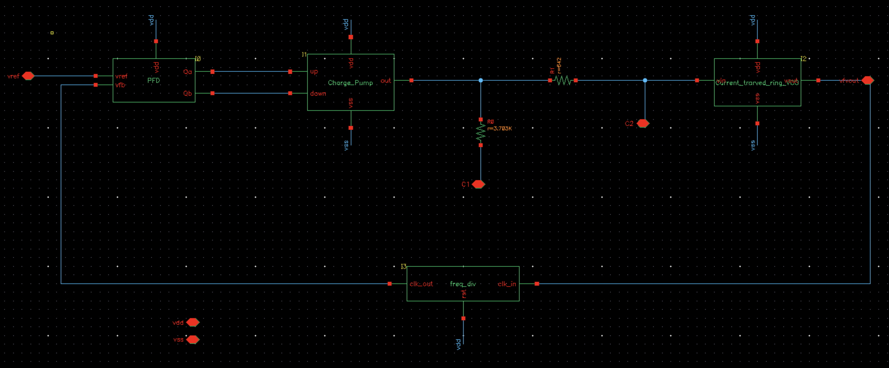
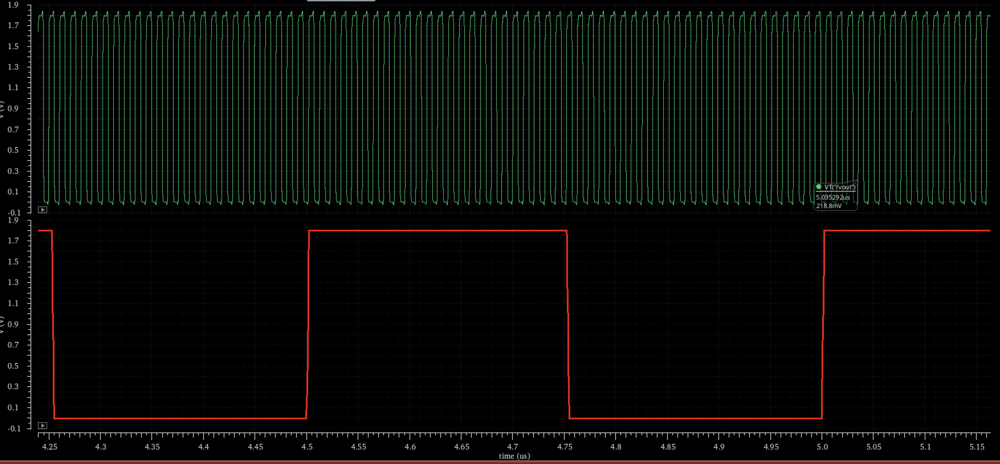
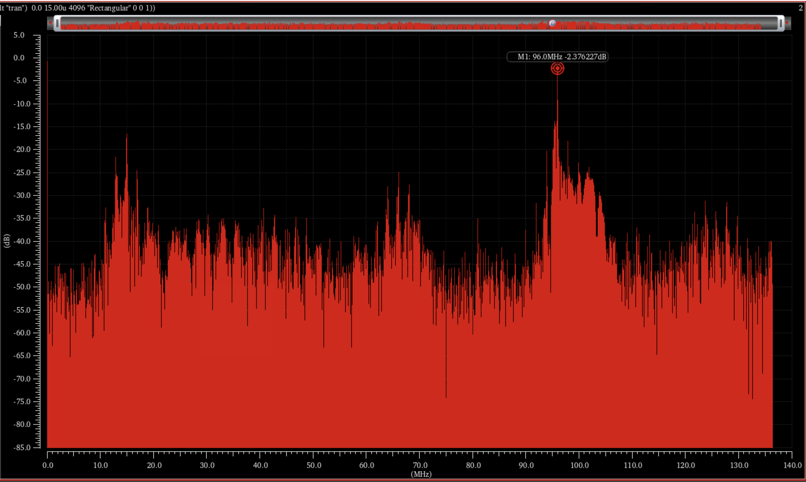
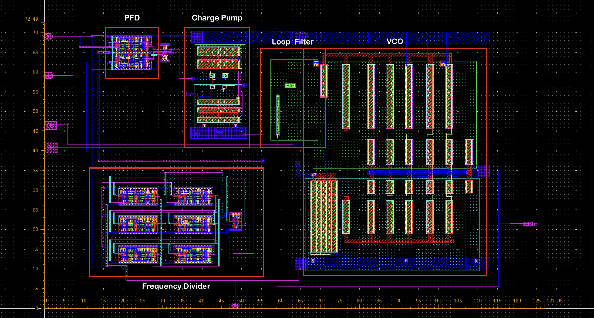

RF integrated circuit design · 2026
Ring-VCO-based phase-locked loop
A SKY130A Integer-N PLL around a current-starved ring VCO, simulated at 96 MHz from a 2 MHz reference.
DESIGN OVERVIEW
From ring oscillator to closed loop.
Across four analog IC design assignments, I characterized a current-starved ring VCO, designed the supporting PLL blocks, and brought them together as a SKY130A Integer-N phase-locked loop. The architecture combines a phase-frequency detector, charge pump, passive loop filter, ring VCO, and fixed divide-by-48 feedback divider.
The VCO tuning sweep covers the intended 50–150 MHz range, with a nominal 100 MHz operating point. In the integrated PLL simulation, a 2 MHz reference and divide-by-48 feedback produce a 96 MHz output. The loop-filter capacitors were external in the simulation test bench.
CIRCUIT DESIGN
Characterize each block, then close the loop.
The ring VCO was characterized before integration. The full schematic connects it to the PFD, charge pump, loop filter, and divide-by-48 feedback path.



SIMULATION
Frequency lock at 96 MHz.
The reported transient and FFT results are for a 2 MHz reference with a divide-by-48 feedback path. The spectrum shows its dominant marker at 96 MHz.


PHYSICAL DESIGN & VERIFICATION
Integrated PLL layout.
The top-level layout places the PFD, charge pump, loop filter, VCO, and divider according to signal flow and noise sensitivity. The reported layout dimensions are approximately 120 × 75 µm (9,000 µm²).


The report records DRC completion and one remaining LVS mismatch associated with the loop-filter resistor device mapping; LVS signoff was unresolved in the reported design.